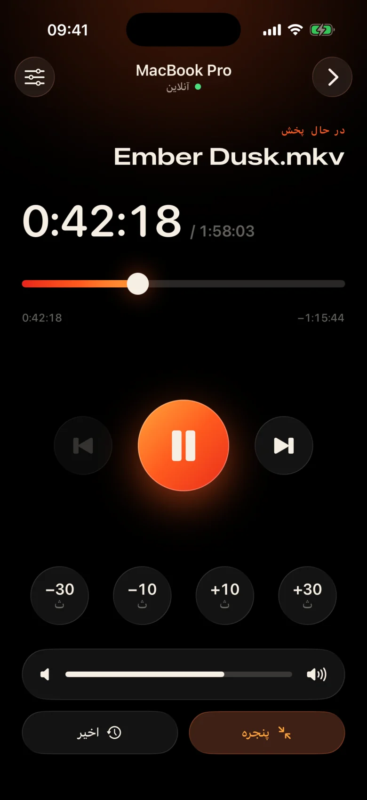
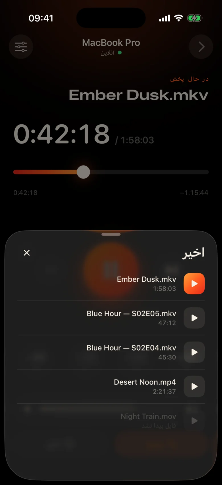
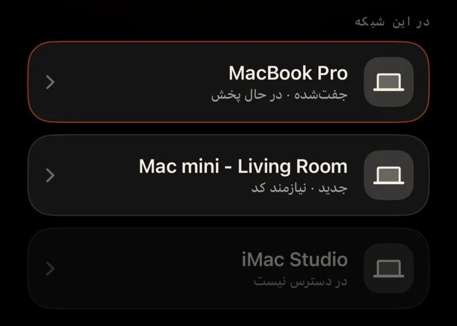
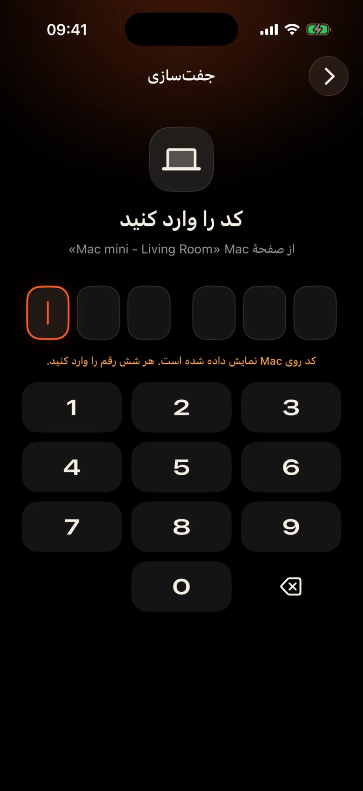

Mac در سراسر اتاق است
از دیوار به پروژکتور وصل شده است. هر مکث به معنای بلند شدن، پیدا کردن صفحه نمایش در تاریکی و چشم دوختن به یک نوار کنترل کوچک است.
Kinrox: روی تلفنی که در دست دارید، روی مکث ضربه بزنید.
Kinrox هر ویدیویی را روی Mac شما پخش می کند — و iPhone شما را به کنترل از راه دور خود تبدیل می کند. MacBook روی پروژکتور، شما روی کاناپه: مکث کنید، 10 ثانیه به عقب بپرید، صدا را کم کنید یا قسمت بعدی را بدون ترک پتو شروع کنید.


از دیوار به پروژکتور وصل شده است. هر مکث به معنای بلند شدن، پیدا کردن صفحه نمایش در تاریکی و چشم دوختن به یک نوار کنترل کوچک است.
Kinrox: روی تلفنی که در دست دارید، روی مکث ضربه بزنید.
زمزمه ها در یک صحنه، انفجار در صحنه بعدی - و کسی قبلاً در اتاق بعدی خواب است.
Kinrox: یک نوار لغزنده صدا درست زیر انگشت شست شما.
پانل های وب با آدرس های IP و رمز عبور، یک برگه مرورگر که به خواب می رود، دکمه های ساخته شده برای میز – نه برای یک کاناپه.
Kinrox: Mac شما را به تنهایی پیدا می کند، با یک کد جفت می شود.

اهداف بزرگ، یک تم گرم تاریک و یک ضربه سبک لمسی زیر هر فشار. می توانید بدون نگاه کردن به فیلم از آن استفاده کنید.
دکمهها آنقدر بزرگاند که حتی در حالت خوابآلود هم میتوانید آنها را لمس کنید.
خطی را از دست داده اید؟ یک ضربه به عقب. از مقدمه با دو بگذرید.
حجم صدای Kinrox از 0 تا 100. صدای سیستم Mac دست نخورده باقی می ماند.
فایل قبلی و بعدی از همان پوشه، به ترتیب Finder.
چیزی را که قبلا تماشا کرده اید انتخاب کنید - در Mac باز می شود.
خط زمانی را به هر لحظه بکشید، تمام صفحه را از مبل تغییر دهید.
بدون آدرس IP، بدون رمز عبور، بدون حساب. پس از اولین کد iPhone شما دوباره به خودی خود متصل می شود.
یک فایل را به Kinrox بکشید یا ⌘ O را فشار دهید. سرور راه دور به طور پیش فرض روشن است.
Kinrox زمانی که هر دو دستگاه از Wi-Fi یکسانی استفاده می کنند، خود به خود نشان داده می شود.

Mac کدی را نشان می دهد که دو دقیقه زنده می ماند. سه تلاش اشتباه و از بین رفت.


Alex’s iPhone میخواهد Kinrox را کنترل کند. این کد را در تلفن وارد کنید.
 انقضای کد تا 1:47 دیگر
انقضای کد تا 1:47 دیگر
ویدئو رابط کاربری است. یک لایه نازک شیشه در صورت نیاز ظاهر می شود و پس از سه ثانیه پنهان می شود.

ساخته شده بر روی libmpv، موتور پشت mpv و IINA. صدا و زیرنویس جاسازی شده یا خارجی را انتخاب کنید. VideoToolbox رمزگشایی سخت افزار را کنترل می کند.
Kinrox ویدیوها را در پوشه ردیف میکند و با پایان یافتن یک قسمت، قسمت بعدی شروع میشود - مانند Finder، "2" قبل از "10".
صفحه کلید ⏯ کلیدها، مرکز کنترل و کنترل در حال پخش Kinrox. حداکثر 20 فایل اخیر در صفحه شروع منتظر می مانند.
Mac و iPhone شما دستورات پخش را مستقیماً از طریق شبکه محلی خود مبادله می کنند. ویدیوهای شما در Mac باقی می مانند.
کشف بیش از Bonjour، اتصالات فقط از زیر شبکه خود شما. آدرس های عمومی و تلفن همراه خودداری می شود.
هر فرمان در یک کانال رمزگذاری شده حرکت می کند. توکنهای مرتبطسازی در Keychain در هر دو دستگاه وجود دارند.
X25519HKDF-SHA256ChaCha20-Poly1305بدون حساب یا تجزیه و تحلیل استفاده. Mac روزانه یک فید بهروزرسانی عمومی را بدون شناسههای منحصربهفرد یا پروفایل سیستم بررسی میکند. این وب سایت هیچ تجزیه و تحلیل یا کوکی ندارد.
کنترل از راه دور عناوین و مدت زمان را می بیند، هرگز مسیرهای فایل را نمی بیند. باز کردن یک فایل اخیر در Mac حل شده است.
Kinrox در Swift 6 و SwiftUI در بالای libmpv نوشته شده است. هر خط پخش کننده، کنترل از راه دور و پروتکل روی GitHub است.
ساخت از منبع# Xcode 26.5, XcodeGen and mpv from Homebrew
brew install xcodegen mpv pkg-config
git clone https://github.com/awaik/Kinrox.git
cd Kinrox
cp -n Config/Signing.local.xcconfig.example \
Config/Signing.local.xcconfig
# Set your team: docs/runbooks/RUNBOOK-BUILD-AND-SIGNING.md
./Scripts/check-env.sh
./Scripts/generate.sh
xcodebuild -workspace Kinrox.xcworkspace \
-scheme PlayerMac -configuration Debug \
-destination 'platform=macOS,arch=arm64' \
-derivedDataPath DerivedData build
open DerivedData/Build/Products/Debug/Kinrox.appوقتی Mac و iPhone یک شبکه Wi-Fi مشترک دارند، پخش و کنترل از راه دور بدون دسترسی به اینترنت کار میکنند. Mac از HTTPS برای بررسی بهروزرسانی روزانه استفاده میکند و زمانی که آن را نصب میکنید، بهروزرسانی را دانلود میکند.
بله. Kinrox روی هر چیزی که Mac شما نشان می دهد پخش می کند - پروژکتور، تلویزیون از طریق HDMI، یا نمایشگر متصل به AirPlay.
Macs با Apple silicon در macOS 14 Sonoma یا جدیدتر، و iPhones در iOS 17 یا بالاتر. Intel Macs هنوز پشتیبانی نمی شود.
بله. هر iPhone یک بار با کد خود جفت می شود. حداکثر چهار ریموت را می توان همزمان وصل کرد. می توانید هر یک از آنها را در تنظیمات پخش کننده لغو کنید.
بله. در Mac، از دکمه Audio & Subtitles یا منوهای Audio و Subtitles استفاده کنید. آهنگهای جاسازیشده را انتخاب کنید، فایلهای خارجی را در پوشههای تودرتو پیدا کنید، یا زیرنویسها را خاموش کنید. Kinrox می تواند انتخاب شما را برای قسمت بعدی به خاطر بسپارد.
هیچی. Kinrox رایگان و منبع باز تحت GNU GPL v3 است.
Kinrox برای Mac و iPhone. رایگان، متن باز و ساخته شده برای شب های سینما.